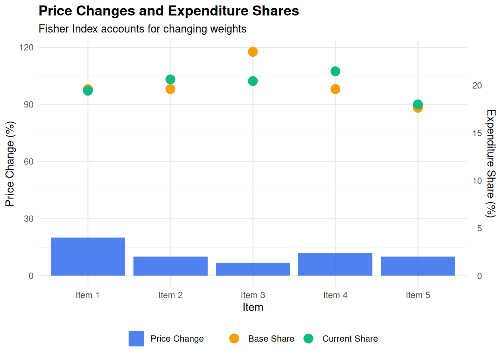

# Function to calculate Laspeyres Index
laspeyres_index <- function(p_current, p_base, q_base) {
laspeyres <- sum(p_current * q_base) / sum(p_base * q_base)
return(laspeyres)
}
# Function to calculate Paasche Index
paasche_index <- function(p_current, p_base, q_current) {
paasche <- sum(p_current * q_current) / sum(p_base * q_current)
return(paasche)
}
# Function to calculate Fisher Index
fisher_index <- function(p_current, p_base, q_current, q_base) {
laspeyres <- laspeyres_index(p_current, p_base, q_base)
paasche <- paasche_index(p_current, p_base, q_current)
fisher <- sqrt(laspeyres * paasche)
return(fisher)
}
# Example data - prices and quantities for 5 products
p_base <- c(10, 20, 15, 25, 30)
p_current <- c(12, 22, 16, 28, 33)
q_base <- c(100, 50, 80, 40, 30)
q_current <- c(95, 55, 75, 45, 32)
# Calculate indices
laspeyres <- laspeyres_index(p_current, p_base, q_base)
paasche <- paasche_index(p_current, p_base, q_current)
fisher <- fisher_index(p_current, p_base, q_current, q_base)
cat("Laspeyres Index:", round(laspeyres, 4), "\n")Laspeyres Index: 1.1157 cat("Paasche Index:", round(paasche, 4), "\n")Paasche Index: 1.1152 cat("Fisher Index:", round(fisher, 4), "\n")Fisher Index: 1.1154 cat("\nFisher change:", round((fisher - 1) * 100, 2), "%\n")
Fisher change: 11.54 %# Visualization
library(ggplot2)
library(dplyr)
# Calculate expenditure shares
exp_base <- p_base * q_base
exp_current <- p_current * q_current
shares_base <- exp_base / sum(exp_base)
shares_current <- exp_current / sum(exp_current)
data <- data.frame(
Item = paste("Item", 1:5),
Price_Change = ((p_current / p_base - 1) * 100),
Base_Share = shares_base * 100,
Current_Share = shares_current * 100
)
ggplot(data, aes(x = Item)) +
geom_col(aes(y = Price_Change, fill = "Price Change"),
position = "dodge", alpha = 0.8) +
geom_point(aes(y = Base_Share * 5, color = "Base Share"),
size = 4) +
geom_point(aes(y = Current_Share * 5, color = "Current Share"),
size = 4) +
scale_y_continuous(
name = "Price Change (%)",
sec.axis = sec_axis(~./5, name = "Expenditure Share (%)")
) +
scale_fill_manual(values = c("Price Change" = "#2563eb")) +
scale_color_manual(values = c("Base Share" = "#f59e0b",
"Current Share" = "#10b981")) +
labs(
title = "Price Changes and Expenditure Shares",
subtitle = "Fisher Index accounts for changing weights",
x = "Item"
) +
theme_minimal() +
theme(
plot.title = element_text(face = "bold", size = 14),
legend.title = element_blank(),
legend.position = "bottom"
)